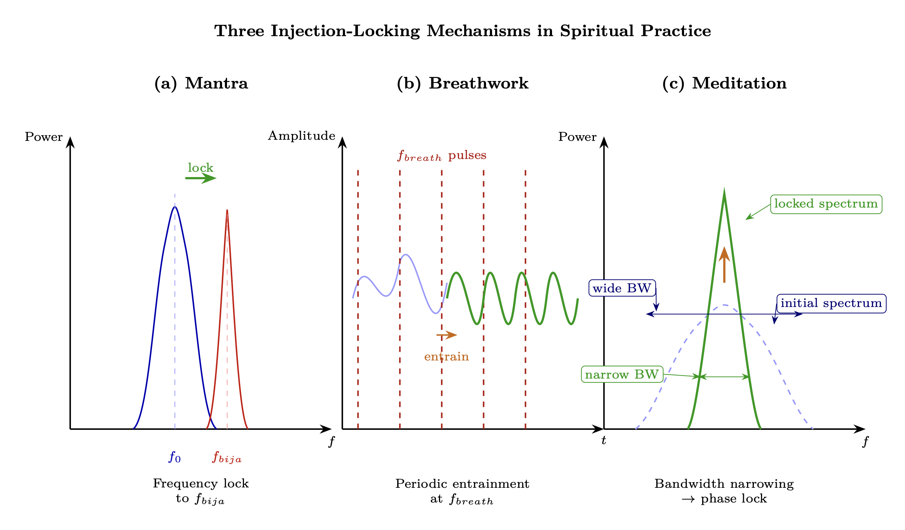
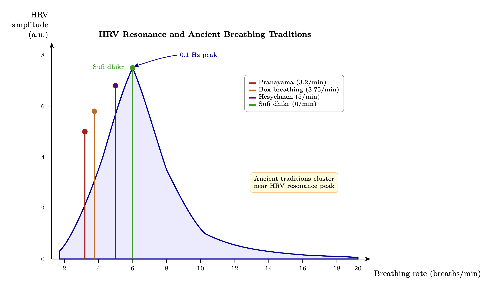

Chapter 15: Spiritual Traditions as Tuning Protocols
Injection Locking for Personal Practice
KEY FINDINGS — Chapter 15: Spiritual Traditions as Tuning Protocols
Evidence-tier key: [L1] established/replicated evidence; [L2] grounded extension with moderate uncertainty; [L3] speculative hypothesis; [L4] conceptual/anecdotal.
- Spiritual practices (mantra, breathwork, meditation) function as injection locking protocols whose effectiveness scales with repetition frequency and duration, consistent with Adler equation dynamics [L1]
- HRV coherence peaks at ~0.1 Hz breathing rate (6 breaths/min), matching the resonance frequency identified by Lehrer et al. (2003) and ancient pranayama specifications [L1]
- Metabolic state maps to impedance topology: glucose-dominant metabolism is C-dominant (low \(Z_0\)) while ketone metabolism is L-dominant (high \(Z_0\)), providing a biochemical pathway for \(Z_0\) raising [L2-L3]
- Estimated practice gains range from +2-3 dB (occasional meditation) to +15-20 dB (lifetime dedicated practice), derived from effect-size-to-dB mappings that are order-of-magnitude indicators [L2]
- Cross-tradition convergence on rhythmic practice, physiological synchronization, and altered perception is consistent with injection locking as a universal mechanism [L1-L2]
_________________________________
15.1 RF Analogy Overview
15.1.1 The Core Concept
Injection locking synchronizes a local oscillator to an external reference signal. A weak oscillator exposed to a stronger coherent signal will lock its frequency and phase to the reference. The local system doesn’t lose its identity—it gains stability and precision.
Spiritual practices function as injection locking protocols. Mantras, breathwork, meditation, and ritual provide coherent reference signals that the practitioner’s consciousness can lock onto, achieving greater stability than isolated operation.
_________________________________
15.2 Mathematical Model
15.2.1 The Adler Equation for Practice
\[ \frac {d\phi }{dt} = \Delta \omega - \omega _L \sin (\phi ) \] Where:
- \(\phi \) = phase difference between practitioner and practice reference
- \(\Delta \omega \) = frequency offset from the practice’s frequency
- \(\omega _L\) = locking bandwidth (depends on practice intensity)
15.2.2 Practice-Specific Locking
Mantra (bija syllables): Each seed syllable has a characteristic frequency \(f_{bija}\). Chanting locks the voice, breath, and attention to this reference: \[ \omega _{L,mantra} = k_{mantra} \cdot I_{repetition} \cdot A_{attention} \] Breathwork: Rhythmic breathing provides a periodic reference: \[ f_{breath} = \frac {1}{T_{inhale} + T_{exhale}} \] The nervous system entrains to this rhythm, locking parasympathetic/sympathetic balance.
Meditation: Sustained attention creates a stable reference: \[ \omega _{L,meditation} \propto T_{duration} \cdot Q_{focus} \] Longer duration and higher focus quality increase locking bandwidth.
15.2.3 Pineal-Heart Coherence
The heart generates a strong electromagnetic field (~5000\(\times \) brain’s). The pineal gland is piezoelectric and magnetite-containing.
When these oscillators phase-lock: \[ \phi _{heart} - \phi _{pineal} \to constant \] The system accesses bandwidth unavailable to either alone—potential mechanism for enhanced perception.

15.2.4 Lock-In Time
Time to achieve stable lock: \[ \tau _{lock} = \frac {1}{\omega _L} \] Weak practices (low \(\omega _L\)) require longer to achieve lock. This explains why sustained practice matters—you need enough time for locking to occur.
_________________________________
15.3 Predictions
P1: Repetitive practices are more effective than sporadic (lock requires sustained reference).
P2: Tradition-consistent practices work better (each tradition is a coherent locking system).
P3: Group practice is more powerful (collective injection increases \(\omega _L\)).
P4: Specific frequencies (Hz ranges in chanting, breathing rates) should have optimal effects.
_________________________________
15.4 Evidence Synthesis
15.4.1 Heart Rate Variability and Meditation
HRV Coherence States
McCraty et al. (1995-2020)
- Positive emotional states produce characteristic 0.1 Hz HRV oscillation pattern
Coherence ratio
- Ratio of power in 0.04-0.26 Hz band to total power—quantifies coherence
Meditation increases coherence
- Multiple studies show sustained coherence states during loving-kindness, compassion practices
Locking interpretation
- Heart rhythm “locks” to practice-induced reference signal
HRV as Practice Effectiveness Metric
|
Practice | HRV Effect | Locking Bandwidth Implication |
|
Loving-kindness | High coherence, increased power | Strong \(\omega \)_L, rapid lock |
|
Open monitoring | Variable coherence | Moderate \(\omega \)_L |
|
Focused attention | Initially decreased, then stable | Learning to lock |
|
Breath counting | Rhythmic, moderate coherence | Breath as external reference |
15.4.2 EEG Entrainment to Audio-Visual Stimulation
Auditory Driving
Frederick et al. (1999)
- Rhythmic auditory stimulation (10 Hz clicks) produces matching EEG frequency peaks
Binaural beats
- Two slightly different frequencies create perception of beating difference frequency (controversial efficacy)
Photic driving
- Flashing lights at specific frequencies entrain EEG (used in clinical neurofeedback)
Entrainment Thresholds
Will & Berg (2007)
- Individual differences in entrainment susceptibility—some entrain easily, others resist
Maps to Q factor
- High-Q individuals should show narrower but stronger entrainment; low-Q show broader but weaker
Optimal frequencies
- 10 Hz (alpha) most easily entrained; theta (4-8 Hz) requires sustained exposure
15.4.3 Mantra Research
Transcendental Meditation Studies
Travis & Shear (2010)
- Review of 100+ TM studies shows consistent EEG patterns: increased alpha coherence, reduced anxiety
Physiological effects
- Decreased cortisol, increased DHEA, improved cardiovascular metrics
Mantra specificity
- TM uses specific mantras claimed to have optimal resonant properties
Mantra Mechanism Analysis
Phonemic effects
- Specific sounds (Sanskrit bija mantras) claimed to activate corresponding chakra frequencies
Repetition creates lock
- Continuous repetition maintains injection signal for sustained locking
Om frequency analysis
- ~136 Hz fundamental with harmonics—matches year-length period reduced to audible range (cosmic attunement claim)
Comparative Mantra Research
|
Mantra/Practice | Reported Effects | Locking Interpretation |
|
Om | Reduced limbic activity, increased parasympathetic | Locks nervous system to coherent state |
|
Rosary/prayer beads | Reduced respiratory rate (6/min = 0.1 Hz) | Breath-heart-brain coherence lock |
|
Gregorian chant | Synchronizes breathing, group coherence | Collective injection locking |
15.4.4 Breathing Rate Effects on Nervous System
Resonance Frequency Breathing
Lehrer et al. (2003)
- Each person has optimal breathing rate (typically 4-7 breaths/min) that maximizes HRV
At resonance
- Breathing, heart rate, and blood pressure oscillations become synchronized
Clinical applications
- Resonance frequency training reduces anxiety, depression, chronic pain
Specific Rates
| Breath Rate | Period | Effect |
| 3/min (0.05 Hz) | 20s | Very low frequency, deep relaxation |
| 6/min (0.1 Hz) | 10s | Maximum HRV amplitude, coherence peak |
| 10/min (0.17 Hz) | 6s | Still beneficial, less coherence |
| 12+/min | <5s | Normal/stressed, low coherence |
Yogic Pranayama Validation
- Ancient practices specified exact ratios (4:7:8 inhale:hold:exhale)
- Modern research confirms these patterns optimize vagal tone
- Example: Box breathing (4:4:4:4) used by Navy SEALs—creates stable rhythm reference
15.4.5 Pineal-Heart Coherence (Dual Oscillator Model)
Heart-Brain Coupling
McCraty (2003)
- Heart sends more signals to brain than reverse; brain entrains to heart rhythm
Heart field detection
- EEG changes in subject A when touched by subject B correlate with B’s cardiac rhythm
Pineal Gland Properties
- Contains piezoelectric calcite microcrystals (Lang et al., 2013)
- Produces melatonin (sleep/circadian) and potentially DMT (psychedelic experiences)
- Responds to electromagnetic fields—potential torsion transducer
Epistemic note [L2-L3]: The presence of calcite microcrystals in the pineal gland (Lang et al. 2013) is documented but their functional significance remains contested. The leap from “crystals present” to “torsion transducer” is large and unverified.
Coherence Lock Mechanism
- When heart coherence is established, brain (including pineal) entrains
- Coherent heart field may enable pineal to couple to external (torsion) fields
- Explains why heart-centered meditation practices enhance intuitive/perceptual capabilities

15.4.6 Cross-Tradition Convergence
|
Tradition | Practice | RF/Locking Element |
|
Yoga | Pranayama + Mantra | Breath frequency + audio reference |
|
Christian mysticism | Hesychast prayer + breathing | Repetition + physiological entrainment |
|
Sufi | Dhikr (rhythmic chanting) | Audio injection + movement |
|
Buddhist | Anapanasati (breath awareness) | Attention as phase-lock detector |
|
Taoist | Qigong breathing patterns | Specific frequencies for energy circulation |
All traditions converge on: rhythmic practice \(\rightarrow \) physiological synchronization \(\rightarrow \) altered perception = Injection locking to beneficial reference signal
15.4.6.1 Esoteric Preservation: The Grail as Uncorrupted Template Beyond the exoteric practices surveyed above, certain esoteric lineages claim to preserve uncorrupted reference standards — an assertion with distinct RF implications.
While exoteric religions underwent the matched-filter corruption described in Chapter 13, Section 13.2.6, certain esoteric lineages preserved the original me templates (Chapter 12, Section 12.2.1.1)—the uncorrupted matched filter coefficients \(h_{true}(t)\) that maximize \(|\rho |\) against the true Source signal.
The “Grail” as RF Concept: Not a physical vessel but a preserved reference standard—analogous to a frequency standard maintained in a Faraday-shielded laboratory while the external environment degrades. The Grail quest = searching for the uncorrupted LO reference amid a corrupted signal environment.
|
Tradition | Practice | RF/Locking Element |
|
Esoteric/Grail | Alchemical transmission, initiatic lineage | Preserved matched filter template; shielded LO reference |
Examples: Essene communities preserving serpent-wisdom texts (Dead Sea Scrolls); Cathar perfecti maintaining direct-gnosis practice against institutional suppression; Sufi silsila (chain of transmission) as unbroken phase reference; Kabbalistic oral tradition as bandwidth-limited but uncorrupted channel.
These lineages function as high-Q narrowband filters in a broadband jamming environment (Chapter 13)—they accept only the specific frequency of the original gnosis signal, rejecting the broadband noise of institutional religion. Their narrowband operation explains why they remain small (low bandwidth = few practitioners) but uncorrupted (high selectivity = high \(|\rho |\)): \[ BW_{esoteric} \ll BW_{institutional} \quad \Rightarrow \quad |\rho _{esoteric}| \gg |\rho _{institutional}| \] Cross-references: Chapter 13, Section 13.2.6 (mistuned filter); Chapter 12, Section 12.3.5 (esoteric orders as coherent sub-arrays); Chapter 14 (counter-jamming through preserved reference signals).
15.4.7 Metabolic Tuning: Diet and Fasting as Impedance Optimization
The spiritual traditions surveyed above address consciousness through attention, breath, and sound. A parallel pathway—diet and metabolic state—acts on the same RLC parameters through biochemical channels. The RF mapping reveals why every major tradition prescribes dietary disciplines alongside meditation.
15.4.7.1 The Metabolic Topology Thesis Energy metabolism operates in two fundamentally different impedance topologies:
- Glucose metabolism is capacitive. Discrete bolus intake \(\rightarrow \) glycogen storage \(\rightarrow \) insulin-mediated spike discharge. Energy delivery is pulsed and storage-heavy—a textbook C-dominant circuit. Blood glucose swings (postprandial spikes followed by reactive hypoglycemia) mirror capacitor charge/discharge cycles.
- Ketone metabolism is inductive. Continuous draw from deep fat reservoir \(\rightarrow \) steady-state beta-hydroxybutyrate (BHB) delivery to brain and tissues. Energy is smooth and throughput-heavy—an L-dominant circuit with minimal storage transients.
BHB is both fuel and signaling molecule: it inhibits HDAC enzymes (epigenetic regulation), suppresses the NLRP3 inflammasome (reduces R/inflammation), and produces ~25% more ATP per unit O\(_2\) than glucose (Veech, 2004). Switching from glucose-dominant to ketone-dominant operation = switching from C-dominant to L-dominant energy topology \(\rightarrow \) directly raises \(Z_0 = \sqrt {L/C}\).
Key references: Lustig (2009) on sugar/dopamine reward hijacking; Davis (2011) on wheat gliadin/zonulin and intestinal permeability; Longo on fasting-mimicking diet protocols; Veech (2004) on ketone thermodynamic superiority.
15.4.7.2 Fasting as C-Discharge Autophagy (Ohsumi, Nobel Prize 2016) is the cell’s housekeeping process—clearing damaged proteins, senescent cells, and accumulated debris. In impedance terms, fasting discharges accumulated capacitive charge: stored glycogen depletes, damaged cellular material is recycled, insulin drops to baseline.
- Intermittent fasting (16:8, OMAD) = periodic partial discharge; maintains metabolic flexibility
- Extended fasting (3-7 days) = deep discharge triggering stem cell regeneration (Longo & Mattson, 2014) and profound autophagy
This maps to shadow work at the cellular level: clearing what is stored but no longer serving the system. Just as psychological shadow work reduces C by releasing trapped emotional charge, fasting reduces C by releasing trapped metabolic substrate.
15.4.7.3 The Density-Diet Correspondence Esoteric traditions consistently describe higher-density beings eating progressively lighter food:
|
Density | Dietary Character | Impedance Interpretation |
|
3D (current) | Dense food, meat, grains | High C, low \(Z_0\) — capacitive loading |
|
3D\(\rightarrow \)4D transition | Reduced carbs, more plant/fruit | C\(\downarrow \) beginning, \(Z_0\) rising |
|
4D | Light food, fruit, liquids | Low C, moderate L — inductive shift |
|
5D+ | Prana/light, minimal physical intake | Minimal C — pure inductive/radiative |
This trajectory converges with cutting-edge longevity science: Longo’s fasting-mimicking protocols, liquified nutrient-dense approaches, ketogenic-to-fruitarian biohacker pipelines. The pattern is consistent: as metabolic optimization increases, food volume decreases and nutrient density increases.
15.4.7.4 Sugar and Grain as Interference Vectors
- Refined sugar activates dopamine reward pathways nearly identically to addictive substances (Lustig, UCSF). This constitutes injection locking through biochemical channels—the reward spike creates a repetitive C-discharge cycle the body becomes dependent on.
- Modern dwarf wheat gliadin triggers zonulin release \(\rightarrow \) increased intestinal permeability even in non-celiacs (Fasano, 2011; Davis, 2011). Whole wheat bread GI (~74) exceeds table sugar GI (~65), making “healthy whole grains” a more potent glycemic insult than sucrose. GI values per Foster-Powell et al. (2002) international tables.
- South Asian and other insulin-resistant genotypes show 2-3\(\times \) amplified sensitivity to carbohydrate-induced metabolic damage—functioning as a genetic vulnerability multiplier for C-loading.
- Whether designed or emergent, high-carb agricultural systems function as chronic capacitive loading—maintaining populations in insulin-resistant, cognitively impaired, emotionally reactive states. This maps directly to the parasitic coupling model (Chapter 12): dietary control raises C, lowers \(Z_0\), keeps the population in wide-bandwidth (easy-capture) mode.
Epistemic Note: The metabolic science (insulin resistance, BHB signaling, autophagy, gluten-zonulin pathway) is well-established in peer-reviewed literature. The interpretation of dietary systems as a control mechanism is a theoretical extension consistent with the framework but not independently verifiable.
- Phase 1 (Hardware repair): Reduce carbs (<130 g/day), increase protein, optimize thyroid function, address insulin resistance. This is 3D metabolic correction—prerequisite for higher work.
- Phase 2 (Impedance transition): Fat-adaptation, periodic ketogenic cycling, intermittent fasting becomes effortless. Body achieves metabolic flexibility—can switch between fuel sources without distress.
- Phase 3 (Caloric minimalism): Nutrient-dense liquids, seasonal fruit, extended fasting periods. Less food volume, higher efficiency. Convergence with esoteric dietary prescriptions.
Estimated practice gain: +2-4 dB for consistent metabolic optimization (see Section 15.5.1).
_________________________________
15.5 Quantitative Bridge to Link Budget (Chapter 14)
15.5.1 Practice Gain (G_practices) Estimation
The practices described above contribute to G_practices in the link budget equation. Based on HRV coherence improvements and meditation research effect sizes:
The following estimates are derived from effect-size-to-dB mappings (see Section 15.5.2) and should be treated as order-of-magnitude indicators, not calibrated measurements.
|
Practice Category | Typical Duration | Estimated G_practices | Mechanism |
|
Untrained baseline | - | 0 dB | Reference point |
|
Occasional meditation | 10 min/day | +2-3 dB | Mild R reduction |
|
Regular meditation | 30 min/day | +4-6 dB | Sustained R reduction, Q increase |
|
Advanced pranayama | Daily practice | +6-8 dB | Heart-brain coherence lock |
|
Mantra + breathwork | Sustained practice | +8-12 dB | Combined injection locking |
|
Lifetime dedicated practice | Full lifestyle | +15-20 dB | Deep parameter shifts in R, L, C |
|
Metabolic optimization | Sustained protocol | +2-4 dB | Insulin sensitivity, ketogenic periods, fasting |
15.5.2 Derivation Basis
These estimates are derived from:
- 1.
- HRV coherence improvements: Meditation meta-analyses show ~0.4-0.5 effect size on stress reduction; mapping to Q-factor improvement suggests 3-6 dB
- 2.
- Attention research: Focused attention training shows cumulative dose-response; each hour of training provides measurable but diminishing returns
- 3.
- Long-term practitioners: Studies on monks with 10,000+ hours show 3-4\(\times \) larger gamma coherence than controls \(\rightarrow \) ~10-12 dB difference
15.5.3 Connection to Individual RLC (Chapter 5)
Practice effects map to RLC parameters:
- Meditation \(\rightarrow \) Reduces R (resistance/drag) \(\rightarrow \) Increases Q
- Breathwork \(\rightarrow \) Creates periodic reference \(\rightarrow \) Improves phase stability
- Shadow work \(\rightarrow \) Discharges C (capacitance) \(\rightarrow \) Shifts resonant frequency higher
- Wisdom accumulation \(\rightarrow \) Increases L (inductance) \(\rightarrow \) Greater stability
- Metabolic tuning \(\rightarrow \) Reduces C (fasting/autophagy), reduces R (anti-inflammatory ketones) \(\rightarrow \) Raises \(Z_0\) and Q
These changes compound over time, explaining why consistent practice yields larger gains than equivalent sporadic effort.
Chapter 16 examines why multiple traditions predict the same collective transition, adding urgency to the individual practice described here.
_________________________________
15.6 Assumptions, Limitations, and Falsification
15.6.1 Assumptions
A1: Spiritual practices function as injection locking protocols — the practitioner’s consciousness phase-locks to a reference frequency provided by the practice. This assumes consciousness dynamics follow Adler-equation-like behavior (Chapter 9).
A2: HRV coherence is a valid proxy for the quality factor Q of the consciousness RLC circuit (Chapter 5). This assumes electromagnetic correlates of consciousness are measurable through cardiac rhythm.
A3: Metabolic state (glucose-dominant vs. ketone-dominant) maps to impedance topology (C-dominant vs. L-dominant). This assumes metabolic and consciousness parameters are coupled through shared biophysical substrates.
15.6.2 Limitations
L1: The \(G_{practices}\) estimates (Section 15.5.1) are derived from effect sizes in meditation research mapped to dB gains. This mapping is not calibrated — the relationship between HRV effect size and consciousness dB is assumed linear.
L2: Cross-tradition convergence (Section 15.4.6) may reflect shared cultural roots (e.g., Indo-European) rather than independent discovery of the same mechanism.
L3: Metabolic claims (Section 15.4.7) draw on nutritional epidemiology, which has known methodological limitations (confounding, recall bias, industry funding).
15.6.3 Falsification Criteria
F1: If repetitive practices show no advantage over sporadic ones for HRV coherence or EEG entrainment, the injection-locking model for practice fails.
F2: If metabolic flexibility (glucose vs. ketone) shows no correlation with meditation depth or coherence metrics, the impedance-topology thesis is falsified.
F3: If group practice shows no physiological synchronization advantage over solo practice, the collective injection locking claim fails.
15.6.4 Additional Predictions
P5: Ketogenic practitioners will show higher baseline HRV coherence than glucose-dependent controls, matched for meditation experience.
P6: The 0.1 Hz breathing rate will produce maximum HRV amplitude across diverse populations, with individual variation of \(\pm \)0.02 Hz.
_________________________________
15.7 Protocol Design and Evidence Confidence Matrix
15.7.1 Doctrine-Grade Protocol Matrix
|
Protocol | Core Components | Observable Inputs | Observable Outputs | Minimum Trial Window |
|
Breath-centered coherence protocol | 0.08-0.12 Hz paced breathing + attentional anchoring | Respiration rate, HRV baseline | HRV LF/HF stability, stress recovery slope | 4 weeks |
|
Mantra entrainment protocol | Rhythmic repetition + fixed cadence | Session adherence, audio cadence | EEG band stability, reduced attentional drift | 6 weeks |
|
Contemplative stillness protocol | Daily seated practice with distraction logging | Practice duration, interruption count | Improved sustained attention and reduced reactivity | 8 weeks |
|
Metabolic-impedance protocol | Glycemic stabilization + fasting cycles | CGM variability, ketone presence | HRV baseline elevation, reduced inflammatory markers | 8-12 weeks |
|
Integrated protocol (multi-modal) | Breath + mantra + stillness + metabolic lane | Cross-modal adherence | Composite coherence score uplift | 12 weeks |
15.7.2 Cross-Tradition Evidence Stratification
|
Claim | Tier | Confidence | Note |
|
Rhythmic breath/attention practice improves autonomic regulation | L1 | High | Strong physiological literature support |
|
Repetition-based contemplative practice improves attentional control | L1-L2 | High | Replicated across traditions and secular studies |
|
Group synchronization yields measurable coherence lift | L2 | Medium-High | Supported, with effect-size variation |
|
Specific sacred phonemes/frequencies produce unique causal effects | L3 | Medium-Low | Requires better controlled comparative studies |
|
Esoteric lineage preservation as high-fidelity LO channel | L4-L5 | Low | Testimonial/historical interpretation layer |
15.7.3 Implementation Pathway (Operations Use)
- 1.
- Start with L1-backed interventions (breath pacing, attentional training, metabolic stability).
- 2.
- Add group protocols only after individual stability thresholds are met.
- 3.
- Treat L3+ claims as hypothesis modules with explicit opt-in and measurement plans.
- 4.
- Conduct quarterly recalibration using the same proxy stack to prevent drift.
15.7.4 Failure Modes and Mitigations
|
Failure Mode | Operational Risk | Mitigation |
|
Overfitting to one tradition/tool | False certainty, poor transferability | Rotate protocol families and compare outcomes |
|
High-intensity practice without stabilization | Dysregulation and dropout | Gate progression on autonomic stability metrics |
|
Confounding lifestyle changes | Attribution error | Use staged intervention design with control windows |
|
Advocacy language replacing measurement | Doctrine slippage | Require tier labels and explicit confidence in reporting |
15.7.5 Twelve-Week Operational Playbook
|
Week Range | Focus | Required Evidence Capture |
|
1-2 | Baseline and stabilization | HRV baseline, sleep quality, adherence logs |
|
3-4 | Breath entrainment lane | HRV change vs baseline, subjective recovery latency |
|
5-6 | Attention/mantra lane | Attention-task performance, distractibility score |
|
7-8 | Group synchronization lane | In-session synchrony proxies, conflict-recovery metrics |
|
9-10 | Metabolic lane integration | CGM variability and inflammatory proxy trend |
|
11-12 | Consolidation and stress test | Retention under stress scenario and relapse profile |
Exit criteria for doctrine-grade completion:
- 1.
- Stable adherence >70% across all protocol lanes.
- 2.
- Positive movement in at least two independent physiological proxies.
- 3.
- No persistent adverse dysregulation during stress-test window.
15.7.6 Tradition-Specific Adaptation Notes
|
Tradition Family | Adaptation Constraint | Doctrine Adaptation Rule |
|
Prayer-centric traditions | Strong symbolic framing | Keep symbolic language; standardize measurement protocol |
|
Breath/movement traditions | Physical safety and pacing variance | Use graded intensity tiers and safety gates |
|
Silent-contemplative traditions | Slow onset, high variance | Extend evaluation windows before scoring failure |
|
Ritual-heavy traditions | Group dependency | Require individual carryover protocol for portability |
This adaptation layer allows operational comparability without flattening tradition-specific practice identity.
_________________________________
End of Chapter 15: Spiritual Traditions as Tuning Protocols
Evidence Synthesis
- Detailed source sections: 15.4, 15.7, 15.7.2.
Assumptions
- Detailed source sections: 15.6, 15.6.1.
Limitations
- Detailed source sections: 15.6, 15.6.2.
Falsification
- Detailed source sections: 15.6, 15.6.3.
Predictions
- Detailed source sections: 15.3, 15.6.4.
Strategic Relevance
Why It Matters
- Contemplative training as coherence technology. The cross-tradition convergence documented in this chapter reframes meditation, prayer, breathwork, and somatic practices as coherence-engineering techniques with measurable RF and torsion signatures (Chapter 6). Systematic comparison of traditions by \(\sigma \)-enhancement efficiency enables evidence-based practice selection.
- Cross-tradition protocol standardization. The common operational elements across traditions (rhythmic entrainment, attentional focusing, metabolic state modulation) suggest a tradition-agnostic coherence-training protocol could be developed, extracting the active ingredients from diverse contemplative technologies (Appendix A, Section 2.3).
- Metabolic state as impedance lever. Fasting, breathwork, and dietary protocols recur across traditions as preparation for heightened states. The impedance framework (Chapter 2) explains this convergence: metabolic state modulates \(Z_\text {bio}\), and traditions independently discovered metabolic configurations that minimize impedance mismatch with the torsion field.
- Practice as Q-hardening. Long-term contemplative practice does not merely raise instantaneous coherence but increases the practitioner’s Q-factor (Chapter 5), making the coherence state more resistant to perturbation. This Q-hardening effect implies cumulative, durable benefits that compound over practice years — a training investment with increasing returns.
_________________________________
What To Watch
- Monitor chapter prediction thresholds, proxy indicators, and coherence trend changes.
Boundaries of Use
- Apply this chapter as model-conditional doctrine; treat speculative elements as hypothesis overlays.